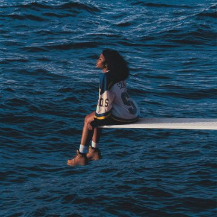

Solána Imani Rowe, known professionally as SZA, is an American singer and songwriter. Rowe was born in St. Louis, Missouri but raised in Maplewood, New Jersey. She released her self-released debut EP, See.SZA.Run in October 2012. In April 2013, SZA released her S EP to good critical reviews— in July of that same year, it was announced she was signed to Top Dawg Entertainment and began working on her Z EP, which would eventually become a full-fledged album. Z was released in April 2014. Rowe's debut album, CTRL, was released in June 2017. Her second album, SOS, was released in December 2022.
Top Songs!
Good days
The Weekend
20 Something
Kill Bill
Shirt
Newest Album
SOS

Sources
* https://thevogue.com/artists/sza/
* https://live365.com/blog/top-10-sza-songs/
* https://variety.com/2022/music/news/sza-new-album-sos-release-date-december-1235434487/
* https://consequence.net/2022/12/princess-diana-sza-s-o-s-album-cover/